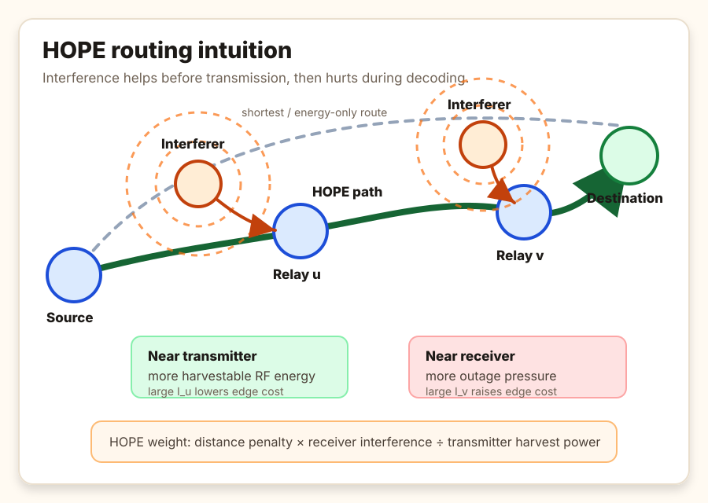
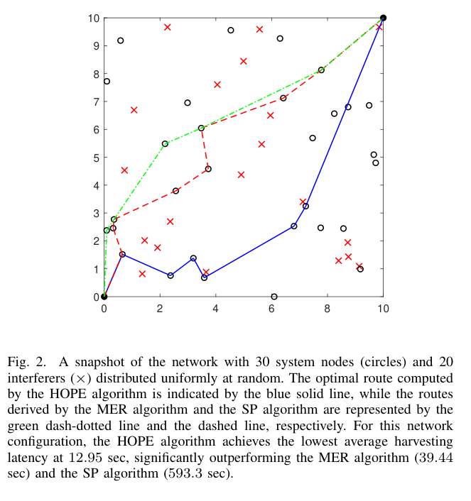
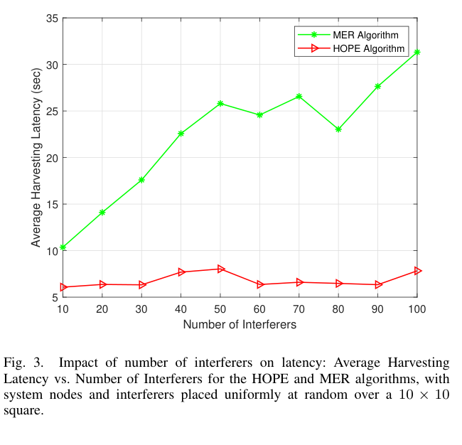
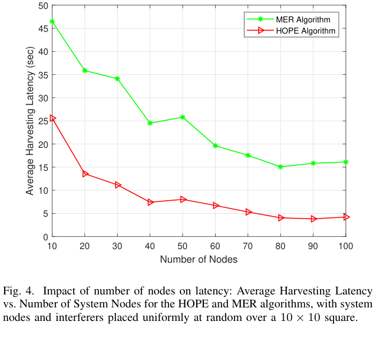

Minimum-Latency Reliable Routing in Interference-Powered Networks
TL;DR
WHAT was done? The paper introduces HOPE, Harvesting-Optimized Path selection with End-to-end outage guarantees, a joint routing and power-allocation method for multi-hop wireless networks whose relays must harvest RF energy from ambient interferers before they can transmit. The key result is a reduction: a min-max harvesting-latency problem with an end-to-end outage constraint becomes an ordinary shortest-path problem with an edge weight that rewards interference at the transmitter and penalizes interference at the receiver.
WHY it matters? Most interference-aware routing treats jammers and uncontrolled transmitters as pure damage; most energy-harvesting routing treats energy availability as a separate resource constraint. HOPE collapses those two views into one design rule: in an RF-powered network, interference is not good or bad globally, but location-dependent. Near a transmitting relay it is useful fuel; near a receiving relay it is reliability debt. That reframe gives low-power sensor and IoT networks a tractable way to route through hostile or messy spectrum without pretending interference can simply be avoided.
Executive summary: The paper's intellectual move is not a new harvester, radio, or MAC protocol. It is an optimization lens that turns the dual nature of interference into a computable graph geometry. Under Rayleigh fading, short-term energy buffering, and known average interference powers, HOPE assigns each directed link the weight w_{u,v} = d_{u,v}^α (N_0 + I_v)/(N_0 + I_u), runs Dijkstra, and then sets relay powers so the outage budget is tight. In a 30-node, 20-interferer simulation, HOPE reaches 12.95 seconds of harvesting latency versus 39.44 seconds for minimum-energy routing and 593.3 seconds for shortest-path routing.
Details
The Interference Sign Error in Conventional Routing

The paper starts from a subtle but important failure mode in wireless routing: interference is usually assigned one sign. In classical outage-aware or jamming-aware routing, interference is a cost because it lowers SINR at the receiver. In energy-harvesting wireless networks, however, the same RF field can also be a power source. Once relays have no long-term battery and must harvest before transmitting, avoiding every interferer can be just as harmful as moving too close to one.
This makes the problem qualitatively different from shortest-path routing, minimum-energy routing, or ordinary outage-constrained routing. A path is not good because it is geometrically short, quiet, or low-power in isolation. It is good if the relays that must transmit can harvest quickly while the receivers that must decode remain reliable enough to satisfy a path-level outage guarantee. HOPE is built around that sign asymmetry. It asks where interference is useful and where it is damaging, then encodes that distinction directly into the graph.
First Principles: Bottleneck Latency, Not Total Energy
The latency objective is chosen carefully. All nodes on a candidate path begin harvesting at time zero, and the store-and-forward transmission can begin only after every transmitting node on the path has accumulated enough energy for its own hop. Because harvesting happens in parallel, the relevant delay is not the sum of relay charging times. It is the slowest relay:
subject to an end-to-end outage constraint p_out^{SD} <= π. This is the right abstraction for the paper's short-term-buffer model. If one relay is energy-starved, the whole route waits; if several relays harvest quickly, their surplus does not compensate for the bottleneck relay unless storage and scheduling policies beyond the model are introduced.
Energy neutrality gives the first half of the mechanism. If node u transmits at power P_u for duration τ, then P_u τ must be supplied by harvested RF energy. With conversion efficiency η, noise floor N_0, and average interference at the transmitter I_u, the paper obtains:
This inequality is the first place where the sign of interference flips. More interference at the transmitter increases the denominator and reduces the harvesting time required for a given transmit power. The relay is still in a hostile spectrum, but it is also drinking from that spectrum.
The Outage Constraint Becomes a Routing Geometry
The second half of the mechanism is the outage reduction. For a path Π, the end-to-end outage is one minus the product of per-link success probabilities. Under the Rayleigh fading model and the paper's average-interference approximation, the multiplicative reliability condition can be transformed into an additive path budget:
where ε = -γ^{-1} ln(1 - π). This is the bridge from communications reliability to graph optimization. Receiver-side interference I_v now appears as a numerator term: it raises the power required to keep the hop reliable. Transmit power can reduce the reliability cost, but higher power also lengthens the harvesting time through the energy-neutrality constraint.
For a fixed path, the KKT conditions force the optimal solution into a bottleneck-equalizing form: each transmitting node's energy-limited time constraint becomes tight. Substituting that structure into the outage budget yields the closed-form path latency:
Since the front factor is independent of the route, the entire joint routing and power-allocation problem reduces to minimizing the sum of nonnegative edge weights:
This is the paper's central object. It says that a link is expensive if it is long, if the receiver is noisy, or if the transmitter has little harvestable RF energy. It is cheap when the transmitter sits near useful RF energy and the receiver remains sufficiently protected. That is a much sharper rule than "avoid jammers" or "minimize power."
The HOPE Mechanism: Dijkstra After the Physics
Once the edge weights are defined, HOPE itself is algorithmically simple. Precompute the average interference I_v at each node, set the outage-derived budget ε, assign every directed link its HOPE weight, and run Dijkstra from source to destination. After the path is selected, compute the bottleneck harvesting time
and set each transmitter power according to the tightness condition:
The practical elegance is that the hard wireless-network coupling is pushed into the weight construction, not into an exotic search procedure. The resulting algorithm is explainable: every chosen edge reflects a physical tradeoff between path loss, receiver-side outage risk, and transmitter-side energy supply. It is also computationally conservative. The paper does not ask the network to solve a mixed-integer nonlinear program online; it asks it to maintain interference estimates and run a standard shortest-path routine.
Analysis: Why Minimum-Energy Routing Loses Here



The numerical section is small but coherent with the theory. The paper compares HOPE against shortest-path routing with uniform per-hop outage allocation and a minimum-energy routing baseline adapted from prior jamming-aware work. In the representative 10 x 10 deployment with 30 system nodes and 20 interferers, using α = 2.5, N_0 = 1 W, interferer power P_i = 1 W, τ = 10 ms, η = 0.6, and target outage probability π = 0.1, HOPE obtains 12.95 seconds of harvesting latency. MER needs 39.44 seconds. Shortest path needs 593.3 seconds.
The reason is not that HOPE magically defeats interference. It chooses a different failure mode. Shortest-path routing ignores the energy/reliability coupling, so it can select relays that are geometrically convenient but energetically starved. MER minimizes transmit energy and therefore tends to route away from receiver-side interference; that reduces power expenditure but also deprives transmitters of RF energy that would have shortened the harvest phase. HOPE exploits the missing variable in MER: the denominator N_0 + I_u.
The scaling plots reinforce the interpretation. As the number of interferers increases, MER latency rises because more interference forces greater transmit power to preserve outage performance. HOPE stays comparatively stable because the same additional RF field also increases harvestable energy at candidate transmitters. As the number of system nodes increases, both methods improve because denser graphs offer more routing choices, but HOPE remains lower across the tested range because it searches over a graph whose geometry is already matched to the RF-energy tradeoff.
Limitations
The reduction is clean because the model is clean. The paper assumes a static network with known node positions, known interferer positions or average interference powers, frequency-flat Rayleigh fading, omnidirectional antennas, and independent link outages. The outage transformation uses an average-interference characterization and a bound whose practical tightness will depend on the interference distribution, fading statistics, and how accurately the network can estimate I_u and I_v.
The energy model is intentionally pessimistic: nodes have short-term buffering and do not accumulate useful energy across longer horizons. That makes the bottleneck-latency objective defensible for ultra-low-power devices with limited storage, but it leaves out policies that exploit historical energy accumulation, traffic scheduling, duty cycling, queueing, or finite-battery dynamics. The simulations are also stylized. Nodes and interferers are uniformly distributed in a square, the comparison set is narrow, and the paper does not include hardware measurements, nonlinear harvesting curves, MAC-layer contention, synchronization cost, mobility, bursty jammers, or adaptive adversaries.
The most important deployment gap is state acquisition. HOPE is easy to run after the weights are known, but real networks still need to estimate and distribute interference information well enough to assign those weights. In a contested or mobile environment, that estimation problem may be the dominant cost.
Impact & Conclusion
HOPE's value is the design principle it extracts: interference-aware routing for RF-powered networks should be sign-aware, not avoidance-first. The same interferer can be beneficial to a transmitter and harmful to a receiver, and the routing metric should preserve that asymmetry instead of collapsing it into a scalar penalty. The edge weight d_{u,v}^α (N_0 + I_v)/(N_0 + I_u) is a compact expression of that principle.
For wireless sensor networks, disaster recovery links, industrial IoT, and contested-spectrum deployments, this offers a useful analytical core: choose paths whose transmitters are close enough to RF energy sources to charge quickly, but whose receivers are not so exposed that outage constraints collapse. The paper should not be oversold as a complete networking stack. It is a routing-and-power primitive under strong assumptions. But as a primitive, it is crisp: it turns the messy dual role of interference into a shortest-path geometry that engineers can reason about, simulate, and extend. The next serious test is whether this sign-aware routing rule survives realistic dynamics: imperfect interference maps, nonlinear harvesters, finite buffers, mobility, MAC overhead, and adversaries that react to the path rather than passively powering it.